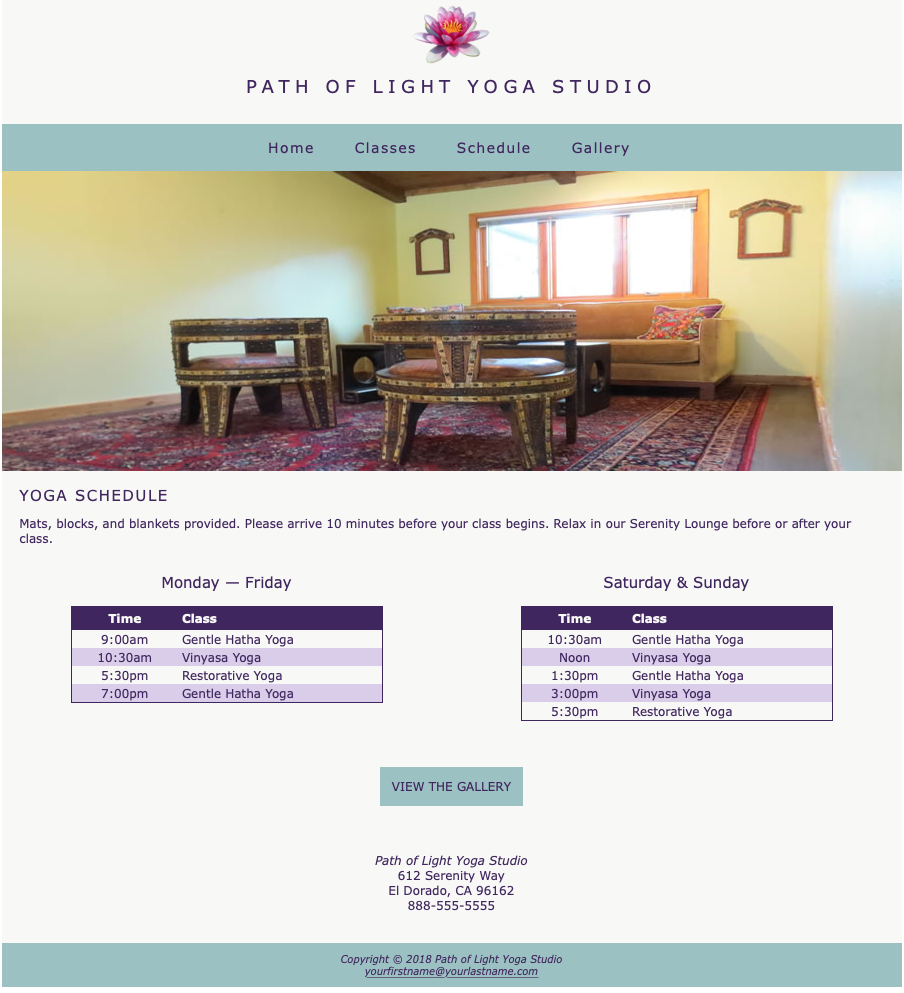
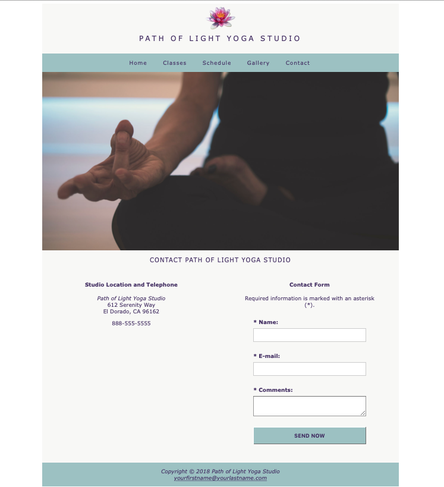

Remember the Path of Light Yoga Studio from Web II? Well we will be continuing some work on that website in our few exercises for Web III. I recommend downloading the starter .zip file here so that you can be sure you are starting off with a good website
Don't worry about uploading these exercises to the server. You can if you want to, but you may also submit a .zip file of your website.
For this first exercise, we will be completing two tasks:
Updating the schedule page to use tables for the schedule instead of unordered lists
Add a contact page and contact form to the website.
Extract the file and rename the folder to w3ex1-lastname
Note that the current schedule page has two columns and uses unordered lists for the schedule information
Note that we will need to create a new contact page and add navigation links to all of the other site pages
Task 1: Update the Schedule Page
We will be updating this page to use tables instead of unordered lists for the schedule. Upon completing this task, the page should like like the below image.

The updated schedule page
A. Add the tables html
Open schedule.html in a text editor and note that the page is already organized into two columns using the "col-half" class. You may want to keep the unordered lists in the the page until you are done coding the tables and information.
In the first half-column update the information to be in table format
Add a table opening and closing tag
Add a table <caption> with the Monday—Friday heading
Add a row <tr> and table headers <th> for "Time" and "Class" table header elements
Add subsequent rows and cells <td> for each subsequent line of time and class information
In the second half-column copy and paste the table from the first column and update the information as appropriate
Be sure to delete the old unordered lists from the html
B. Add the table styles
We will now add the styles for the table so into yoga.css so that they tables displays appropriately. Don't forget that we need to check how the table displays in tablet & mobile format too!
Open the yoga.css file in a text editor
Make sure you are working in the desktop view section of the CSS, not in the media query sections
Add a CSS selector for .col-half table
We are working with how the tables display specifically in the col-half format format. Because we might want the styles to display differently in the col-third format we will be specific with our CSS selectors here.
Set the table width to 80%
Set the border to "solid 1px #3F2860
set border-collapse to collapse
set the left margin to auto
set the right margin to auto
set the bottom margin to 1em
Add a CSS selector for ".col-half table caption" to make the text larger and give it some space
set the font-size to 1.25em;
set the bottom margin to 20px;
Add a CSS selector for ".col-half table th" to style the header row
set the text color to #F8F8F6
set the background color to #3F2860
Add a CSS selector for ".col-half table td" and set the padding to 10px
Add a CSS selector for ".col-half table td, .col-half table th"
set the padding to 2px on the top and bottom and 5px on the left and right
set the border to none
Add the below CSS to align the right table header text to the left, align the left column cells' text to the left, and to give the odd rows some background shading
Now take a look at your work in a browser! Everything works well in desktop view, but note that in tablet and mobile views the text feels a bit large. Also there are some display port sizes where the tables don't display nicely, so we will add some basic mobile styling.
Add the following styles to the tablet media query (@media only screen and (max-width: 1024px))
Add a CSS selector for ".col-half table"
set the width to 100%
set the font-size to .9em;
Save your CSS file and review the site in a browser. The tables should now display cleanly in all viewport sizes.
Task 2: Add a Contact Page and Contact Form
Now we will add a contact page, a contact form and then style the form to display nicely on the page. Once we are done the page should look like the screenshot below.

Screenshot of the new contact page.
A. Add a contact page to the site
Duplicate the schedule page and rename it to "contact.html"
Open up all of the site pages and add a link to the contact page in the navigation
Change the title in the head of the contact page to say "Contact" instead of "Schedule"
Save your pages
B. Update the new contact page
Change the hero image to "yoga-contact-hero.jpg" (provided in the images folder of the starter .zip file above) and update the alt tag for the new image.
Change the h2 to say "Contact Path of Light Yoga Studio" and remove the descriptive paragraph under it.
Add the class "center-inline" to the h2 to center the text.
Update the left column information
Remove the table containing the Monday-Friday schedule
Add an h4 with the class of "center-inline" to say "Studio Location and Telephone"
Cut the text from the address row below and paste it into this column--do not copy the entire div/row tag, just the paragraph with the contact information.
Update the right column information
Remove the table containing the Saturday & Sunday schedule
Add an h4 with the class of "center-inline" to say "Contact Form"
Add a <p> with the class of "small-text" and "center-inline" to say "Required information is marked with an asterisk (*)."
Add a form tag that uses the post method to submit through the textbook publisher's script:
Add the html code below to add form labels and input tags.
Note that each label/input pair is placed inside of a div with the clearfix class. This will help us tomore easily format the form when we get to styles.
Also note that each section of the form uses "required="required", which uses HTML5 Form Controls to dictate how the user can submit. This previously had to be done with JavaScript.
Save your CSS file and verify the changes in a browser. Since we set the input and text area elements to clear the floats and a width of 100% they will appear below the labels and automatically fill their column no matter the viewport. Because of this fluid styling we don't need separate styles for tablet and mobile.
Compress your file into a .zip or upload it to the server and submit!